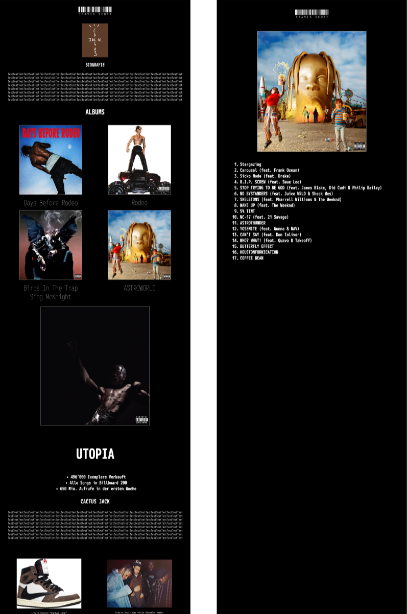
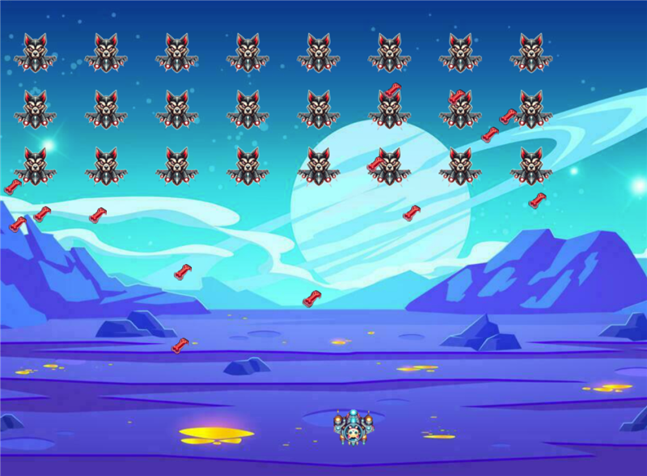
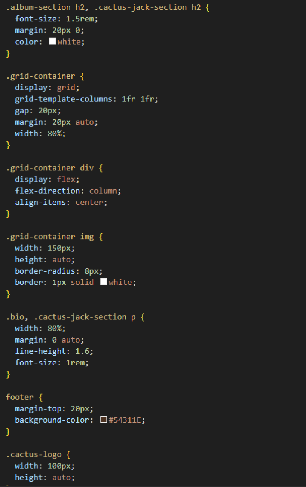
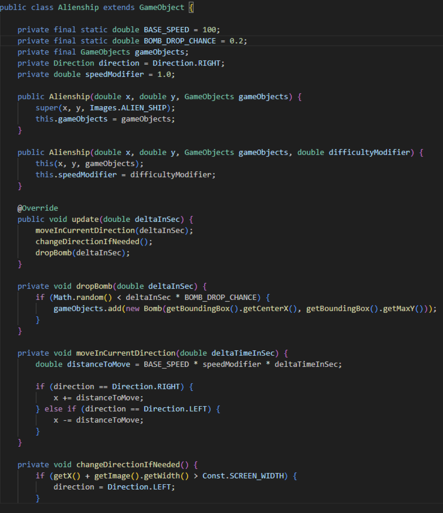

Portfolio
Meine Projekte

Travis Scott Wiki
Im Bbc hatten wir ein HTML- und CSS-Projekt, bei dem ich eine Wiki-Webseite von meinem Lieblingskünstler selbstständig erstellen durfte.

Nebula Attack
Ich durfte im Bbc ein JavaFx Projekt machen, bei dem ich ein Space-Invaders-Spiel zu meiner eigenen Version erweitert habe.
Code Abschnitte
CSS

Java
